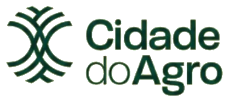
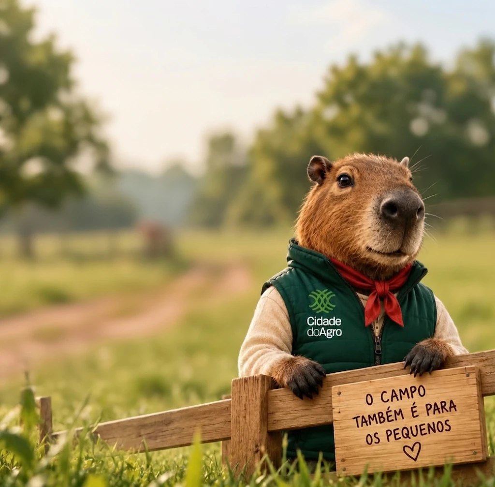
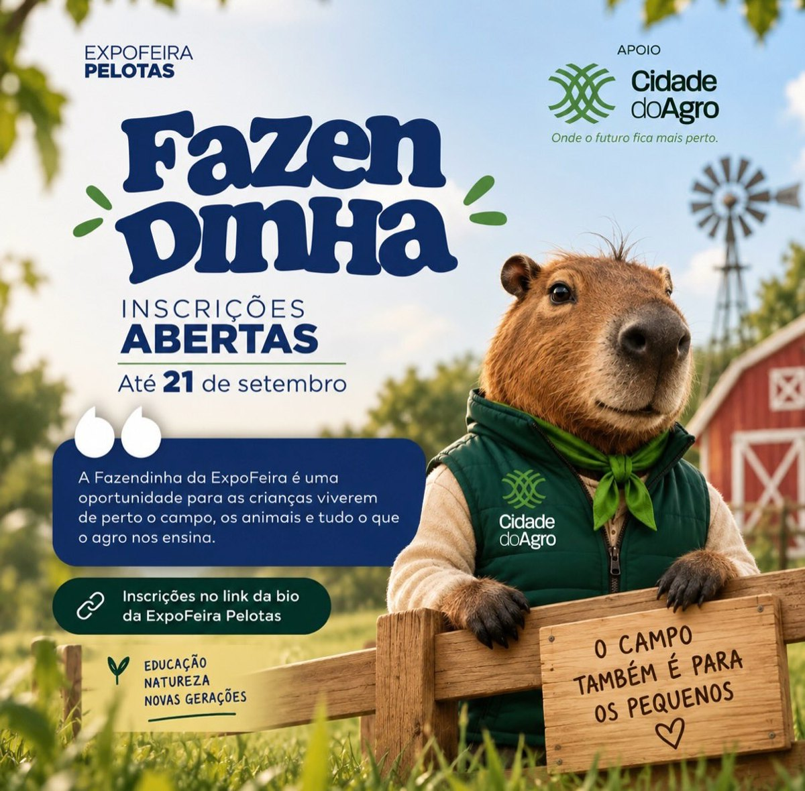

🌾
Comedora de capim
O nome vem do tupi e quer dizer algo como “comedora de capim”. É herbívora: pasta gramíneas e plantas aquáticas.

maquete digitalColete verde com o logo, blusa de lã e lenço no pescoço: a mascote da Cidade do Agro está pronta para a lida — e para receber a gurizada.
Gira ela, passa o dedo por perto (ela acompanha com o olhar) e toca nela para ouvir uma curiosidade.
Nome oficial: a definirA mascote apareceu na divulgação da Fazendinha da 100ª ExpoFeira Pelotas, que a Cidade do Agro apoia: um espaço para as crianças viverem de perto o campo, os animais e tudo o que o agro ensina. O recado dela está na placa da cerca: “o campo também é para os pequenos”.
Ela nasceu nos banhados do sul, entre as várzeas onde hoje cresce o arroz irrigado. Cresceu vendo o campo mudar: a soja chegando às terras baixas, as pastagens de inverno, o gado no piquete. Curiosa como toda capivara, resolveu sair da beira d'água para conhecer quem faz o agro acontecer — e acabou virando a anfitriã da Cidade do Agro.
Hoje ela recebe as visitas, apresenta o campo experimental para a gurizada e não perde uma roda de conversa. Nome? Ainda não tem. Quem sabe as crianças da Fazendinha escolhem?
O nome vem do tupi e quer dizer algo como “comedora de capim”. É herbívora: pasta gramíneas e plantas aquáticas.
Tem membranas entre os dedos e consegue ficar alguns minutos debaixo d'água para escapar de predadores.
Olhos, orelhas e narinas ficam no topo: dá para ficar quase toda submersa e ainda enxergar, ouvir e respirar.
Capivaras são sociáveis e andam em bandos — combina com um projeto que nasceu para juntar gente.
No Rio Grande do Sul é vista nos banhados e beiras de rio, como na Estação Ecológica do Taim, no extremo sul do estado.
Verde da marca, com o logo da Cidade do Agro no peito. Roupa de quem trabalha no campo.
Tradição gaúcha. Na primeira arte é vermelho; no cartaz da Fazendinha, verde. Aqui dá para trocar.
Porque o inverno no sul não é brincadeira — e a lã é produto da nossa ovinocultura.
Cerca de madeira de piquete e a placa com o recado: o campo também é para os pequenos ♥.

